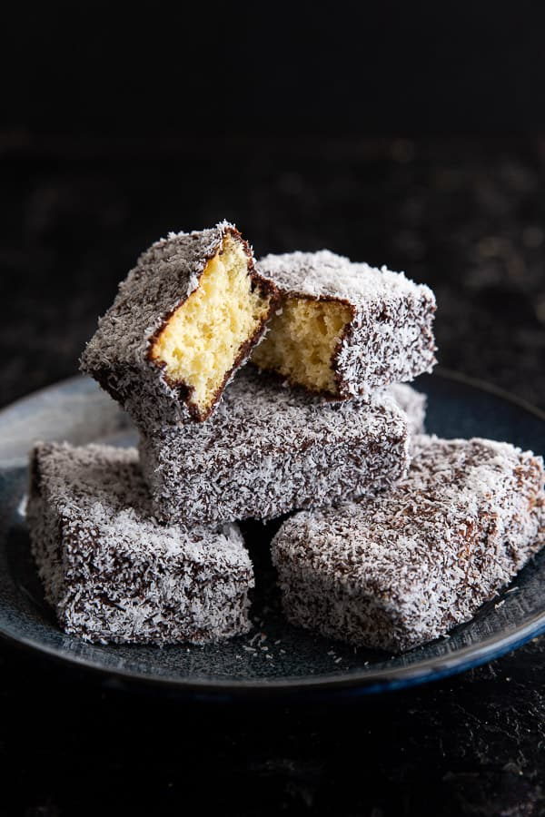

LAMINGTON

DESCRIPTION
Lamingtons are Bogan Marie Antoinette's perfect sweet snack with her afternoon tea. Lamingtons are made of a light and airy sponge cake, sliced and dipped in a rich chocolate sauce and sprinkled with coconut. They are oh so soft, butter and delicious. The best part of it all is it is one of the easiest cakes to make!
EQUIPMENT
- 24 x 24 cm baking dish / lamington tray
- wire cooling rack
- baking tray
INGREDIENTS
- 125 g or 3/4 cup white sugar
- 50 g butter (softened)
- 2 eggs (beated)
- 120 g or 1 cup self raising flour
- 85 g or 1 cup desiccated coconut
- 2 tbsp cocoa
- 150 g or 1 cup icing sugar / powder sugar
- 3tbsp boiling water
- tbsp butter (melted)
INSTRUCTIONS
For the Sponge
- Preheat your oven to 180°C.
- Cream together the sugar and butter with a spoon or hand mixer. Then, add in the eggs and give it a whisk until combined.
125g white sugar, 50g butter , 2 eggs
- Next, add the self raising flour and mix again until you have a smooth cake batter.
Note: Egg sizes may vary. If your batter is too thick at this stage, add a dash of milk to thin.
- Pour batter into a lined square baking tray (24×24 cm) and smooth out to the edges. Bake in oven for 20 minutes or until deliciously golden on top. Test with a wooden skewer and if it comes out clean, it's ready.
- Allow the sponge to cool on a baking tray before cutting into squares or rectangles.
For the Chocolate Sauce
- Mix together the icing sugar, cocoa, melted butter and boiling water. Pop the desiccated coconut into a separate bowl. Place a wire cooling rack over a baking tray so it's ready for the dipped lamingtons.
Tip: Keep your boiling water near by, if your chocolate sauce starts to harden, add a dash more water and mix it in thoroughly then continue to coat as normal. 85 g desiccated coconut,2 tbsp cocoa,150 g icing sugar / powdered sugar,3 tbsp boiling water,1 tbsp butter
To Assemble
- One at a time, place each slice of sponge cake on a fork and dunk it in the chocolate sauce. You may need to roll it around a bit to ensure it's completely covered. Then use the fork to lift the cake out of the chocolate and pop it into the coconut. Use the fork to cover the cake with coconut, then once coated, transfer to the wire rack to dry.
- Allow lamingtons to dry for 5-10 minutes then dig in!